Kevin ABALA
"Journaliste et animateur de télévision chevronné comptant plus de 10 ans d'expérience au cœur des médias audiovisuels majeurs (CRTV, HTV, Cam 10 TV / Canal+ 512). Spécialiste de la conduite d'interviews à fort enjeu et de la présentation de grands rendez-vous en direct."
Basé à Yaoundé, Cameroun — Disponible pour missions et structures de production au Cameroun et à l'international (ex: Hémisphère).
Médias Audiovisuels & Institutions Partenaires :
Le Journaliste Éditorial & L'Homme d’Antenne
Alliant maîtrise éditoriale, leadership d'antenne et expertise en stratégie transmédia : une signature professionnelle d'exigence internationale.
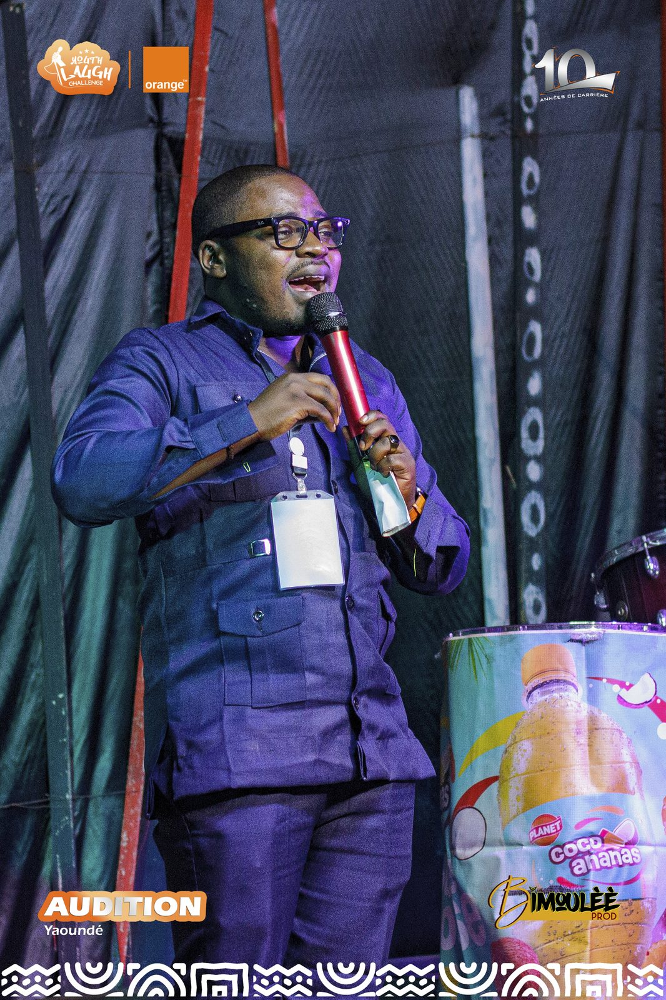
Kevin ABALA
Journaliste & Producteur TV · Yaoundé, Cameroun
Prix & Distinction Nationale
Lauréat du Micro d'Or (2016)Décerné de la Meilleure Voix Masculine de l'Antenne par la CRTV pour l'excellence d’animation radio & télévisée.
Ingénierie de la Communication
Institut Supérieur Mony Keng (ISMK)BTS en Business & Corporate Communications : rigueur protocolaire, gestion de crise, direction d'antenne et stratégie transmédia.
Kevin ABALA est un journaliste et animateur de télévision chevronné comptant plus de 10 ans d'expérience au cœur des médias audiovisuels majeurs du Cameroun et d'Afrique Centrale (CRTV, HTV, Cam 10 TV / Canal+ 512).
Présentateur TV & Producteur d'Émissions (Cam 10 TV & HTV) : Spécialiste de la conduite d'interviews à fort enjeu (ex: L'invité face aux journalistes), il conçoit, écrit et présente en direct les grands rendez-vous d'antenne culturels et sociétaux (H'Matin, Le Grand H, On se lâche), assurant la direction éditoriale et la rédaction des conducteurs.
CRTV (2012 – 2016) : Animateur Radio & Chef d'Antenne Jeunesse sur la CRTV (Office de Radiodiffusion Télévision Camerounaise), il a porté les programmes phares Juvénile et Horizon Tropical, tout en formant les nouveaux talents de l'antenne. Sa rigueur lui a valu le prestigieux Micro d'Or de la Meilleure Voix Masculine (2016).
"La présentation en direct et l'interview d'exécutifs exigent un leadership d'antenne naturel, une présence rassurante et une parfaite maîtrise du temps d'antenne."
Conseil en Communication & Stratégie Média
Accompagnement de marques d'envergure et d'institutions internationales (Fluid Services, Campus Maroc, Groupe TEGZAGON) dans leur positionnement et leur réputation.
Prise de Parole & Conférences Internationales
Modérateur et Maître de Cérémonie sur des forums stratégiques sur les relations internationales (Europe de l'Est / Afrique, sommets économiques et mariages VIP).
Voix-Off & Production Exécutive
Production exécutive et voix narrative pour documentaires, spots publicitaires institutionnels et formats digitaux à forte viralité.
Mastery d'Antenne & Direct 360°
Gestion du stress en direct, relance d'interview incisive, écriture de conducteurs TV et maîtrise parfaite de la chaîne de fabrication audiovisuelle.
Langues & Post-Production
Français : Natif/Académique | Anglais : Courant | Espagnol & Russe : Intermédiaire. Maîtrise des outils Mac/CapCut, proxy editing et pistes son.
L'Excellence en Images & en Direct
Un portfolio structuré illustrant la maîtrise des plateaux TV en direct, la tenue de grands débats et l'animation d'événements de haute facture.
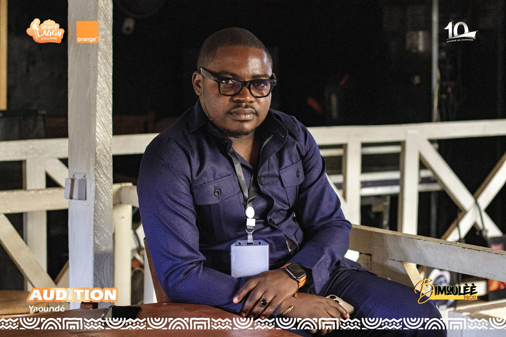
Magazines TV DirectPrésentation des Magazines « H'Matin », « Le Grand H » & « On se lâche »
Conception, écriture et présentation quotidienne en direct de rendez-vous d'information sociétale, culturelle et de décryptage.
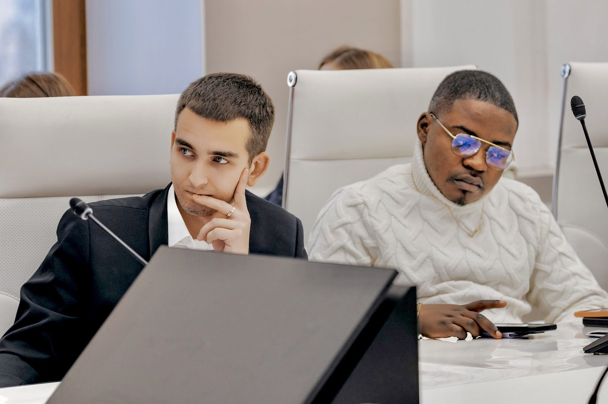
Interviews à Fort EnjeuEntretiens Politiques & Culturels « L'Invité face aux journalistes »
Conduite d'interviews avec des personnalités publiques, artistes internationaux et décideurs économiques avec rigueur et relance incisive.
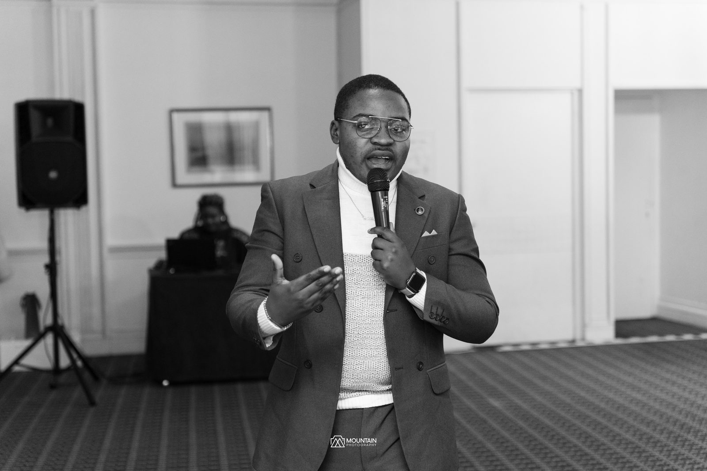
Relations InternationalesModération de Forums Internationaux & Rapprochement Culturel
Animation et modération de débats de haut niveau axés sur les échanges géopolitiques, économiques et le dialogue interculturel.
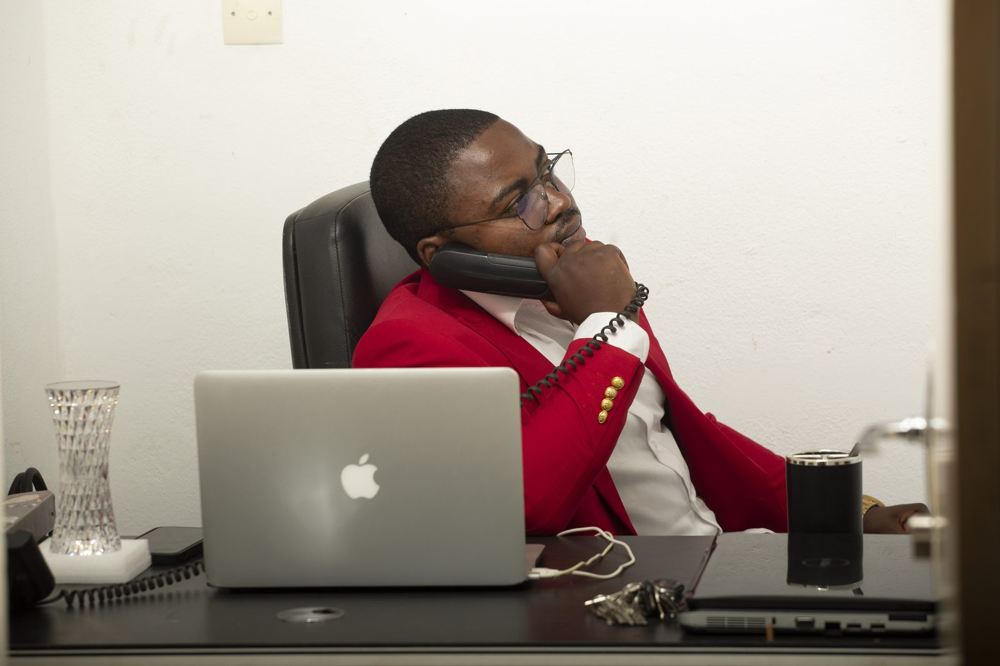
Expertise InstitutionnelleConseil en Stratégie Média & Accompagnement de Marques
Gestion de réputation, media training pour exécutifs, création de contenus viraux et production exécutive de voix-off narratives.
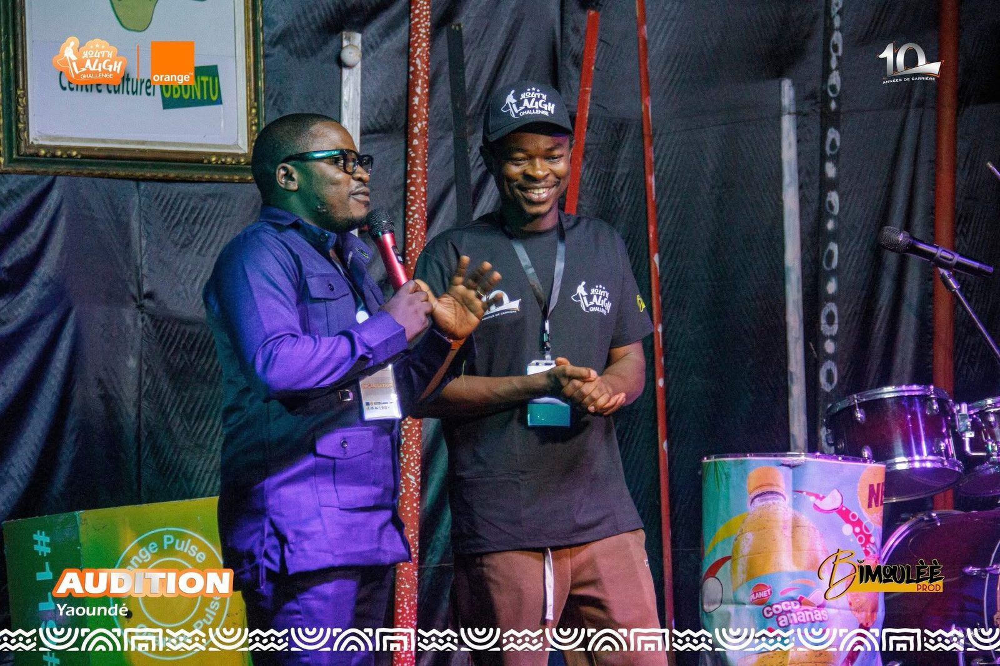
Mariages VIP & GalasMaître de Célémonie sur Mariages VIP & Réceptions de Prestige
Conduite protocolaire élégante, dynamisme raffiné et articulation harmonieuse entre traditions et cérémonial d'exception.
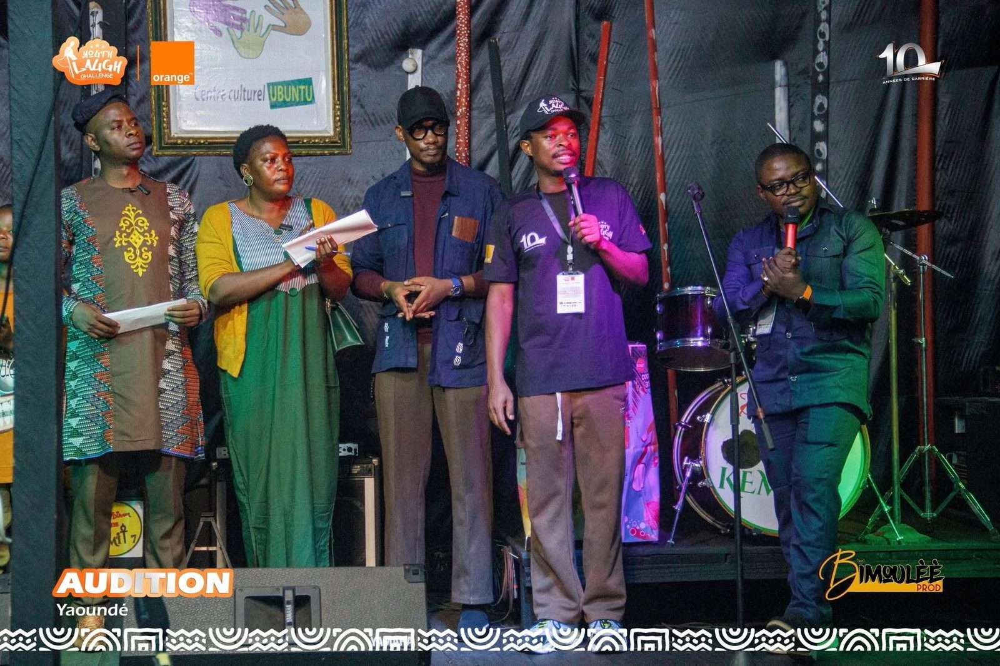
Radio & Chef d'AntenneDirection d'Antenne Jeunesse & Émissions « Juvénile » & « Horizon Tropical »
Animation des programmes phares de la CRTV et encadrement des nouveaux talents de l'antenne (2012-2016).
Prise de Contact & Réservation
Transmettez vos besoins en animation, présentation TV ou voix-off. Confirmation immédiate sur WhatsApp (+237 696 088 243).
Demande de Collaboration & Disponibilités
Toutes les informations transmises génèrent un message WhatsApp officiel pré-formaté.
Propos de Kevin ABALA
Journaliste et animateur de télévision chevronné comptant plus de 10 ans d'expérience au cœur des médias audiovisuels majeurs (CRTV, HTV, Cam 10 TV / Canal+ 512). Spécialiste de la conduite d'interviews à fort enjeu, du décryptage socioculturel et de la présentation de grands rendez-vous en direct.
Alliant maîtrise éditoriale, leadership d'antenne et expertise en stratégie transmédia, Kevin ABALA apporte une signature professionnelle, dynamique et internationale adaptée aux exigences des structures de production d'envergure (telles que Hémisphère).
Distingué du Micro d'Or et de la Meilleure Voix Masculine (2016) lors de ses années phares sur l'antenne nationale de la CRTV (2012-2016), il a guidé les programmes phares Juvénile et Horizon Tropical avant d'imposer son style sur Cam 10 TV (Canal+ 512) et HTV dans les magazines d'information H'Matin, Le Grand H et On se lâche.
Consultant en communication d'entreprise (BTS ISMK), il accompagne des marques de premier plan (Fluid Services, Campus Maroc, Groupe TEGZAGON) dans leur stratégie média, produit des voix-off narratives institutionnelles pour documentaires et intervient comme modérateur de forums sur les relations internationales (Europe de l'Est / Afrique).
Jalons & Trajectoire Médias (10+ Ans)
CRTV (Radio & Télévision Nationale)
Animateur Radio & Chef d'Antenne Jeunesse (Juvénile, Horizon Tropical). Lauréat du Micro d'Or 2016 (Meilleure Voix Masculine).
BTS Communication (ISMK) & Consulting
Formation en Business & Corporate Communications. Lancement d'activités de voix-off et stratégie de marque à Yaoundé.
Cam 10 TV (Canal+ 512) & HTV
Présentateur TV & Producteur d'Émissions (H'Matin, Le Grand H, On se lâche, L'invité face aux journalistes).
Stratégie Média & International
Conseil auprès d'institutions (Fluid Services, Campus Maroc, TEGZAGON), modérations Afrique/Europe de l'Est et voix-off.
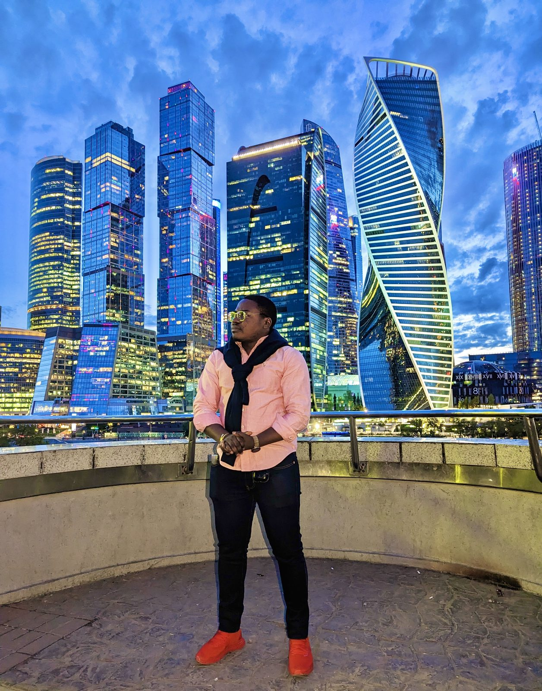
Kevin ABALA
Journaliste TV · Producteur · Consultant
- Lauréat Micro d'Or (2016)
- CRTV / Cam 10 TV / HTV Anchor
- FR (Natif), EN (Courant), ES/RU
- Kevindavidabala@gmail.com
- +237 696 088 243
Services Éditoriaux & Accompagnement Média
Des prestations à forte valeur ajoutée pour les chaînes télévisées, institutions publiques et marques d'envergure.
1. Production Éditoriale & Animation TV / Radio
Présentation & Interviews de Haut Niveau
Conduite d'entretiens politiques, culturels et sociétaux à fort enjeu (ex: L'invité face aux journalistes) et direct TV.
Points clés :
- Gestion du direct, relance d'interview incisive
- Présentation de grands magazines (H'Matin, Le Grand H)
- Diction irréprochable et maîtrise du minutage
Producteur Éditorial & Direction d'Antenne
Conception de projets TV, rédaction des conducteurs, sélection des thématiques et encadrement des équipes plateau.
Points clés :
- Écriture de concepts de talk-shows originaux
- Mentorat et coaching de nouveaux talents
- Adapté aux exigences de production (Hémisphère)
Maître de Célémonie & Modérateur International
Modération de conférences stratégiques (Europe de l'Est / Afrique) et Maître de Célémonie pour mariages & galas VIP.
Points clés :
- Tenue bilingue (Français / Anglais courant)
- Conduite protocolaire rigoureuse et prestige
- Animation vivante de sommets d'affaires
2. Stratégie Média, Voix-Off & Production Digitale
Création de Contenu, Voix-Off & Documentaires
Production exécutive et voix narrative pour documentaires, spots publicitaires institutionnels et formats digitaux à forte viralité.
Bénéfice : Une identité vocale et une signature narrative captivante (Lauréat Micro d'Or).Conseil en Communication Institutionnelle
Accompagnement de marques d'envergure (Fluid Services, Campus Maroc, Groupe TEGZAGON) dans leur image et leur réputation.
Bénéfice : Positionnement de marque fort et relations presse structurées.Media Training pour Exécutifs
Préparation intensive des dirigeants à la prise de parole publique, interviews télévisées et gestion de situations de crise.
Bénéfice : Maîtrise des éléments de langage et aisance face aux caméras.Portfolio des Projets & Émissions
Découvrez une sélection de réalisations télévisées, d'interviews de haut niveau et d'animations d'événements majeurs.
Magazines Télévisés « H'Matin », « Le Grand H » & « On se lâche »
Rôle : Présentateur Vedette & Producteur Éditorial
Présentation quotidienne en direct des magazines d'information, sélection des sujets et direction des équipes plateau.
Entretiens Majeurs « L'Invité face aux journalistes »
Rôle : Journaliste Intervieweur
Conduite d'interviews avec des leaders politiques, figures publiques et artistes de renom.
Chef d'Antenne Jeunesse & Émissions « Juvénile » & « Horizon Tropical »
Rôle : Animateur Radio & Chef d'Antenne
Animation des programmes phares de l'antenne nationale. Récompensé du Micro d'Or de la Meilleure Voix Masculine (2016).
Accompagnement de Marques & Production de Voix-Off
Rôle : Consultant en Communication & Voix Narrative
Création de contenu, voix narrative pour spots institutionnels et documentaires à fort impact.
Actualité & Réseaux Officiels
Suivez les interventions média, analyses et coulisses de Kevin ABALA sur ses canaux certifiés.
Analyses média, opportunités de production éditoriale et actualités audiovisuelles.
Consulter le Profil LinkedInPage Facebook
Directs & ÉvénementsRetransmissions de grands rendez-vous, extraits télévisés et actualités publiques.
Suivre la Page FacebookInstagram Officiel
Coulisses Studios & ScèneCoulisses des plateaux TV, moments forts de modération et vidéos du quotidien.
Suivre sur InstagramX (Twitter)
Analyses Média & ActualitéPrises de parole sur le journalisme, la communication et les faits de société.
Suivre sur X (Twitter)Photothèque Officielle — Plateau & Scène
Mise à jour régulière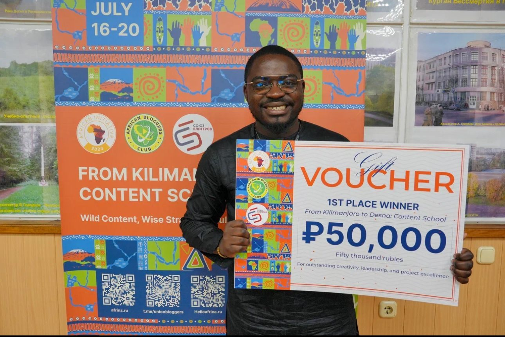
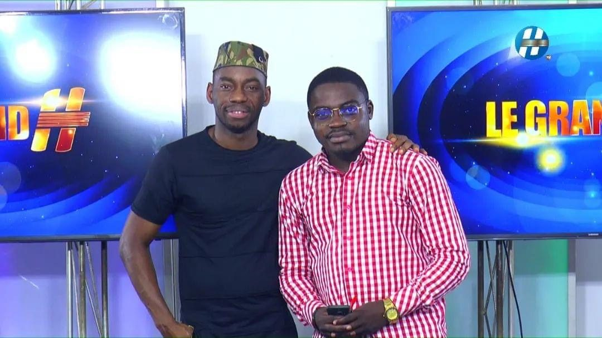
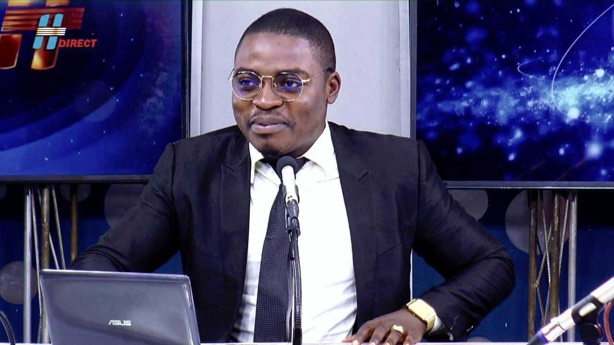
Contact & Prise de Touche
"Pour une structure de production (ex: Hémisphère), un plateau TV, une voix-off ou une modération d'événement."
Coordonnées Directes
Prenez contact directement pour vos projets audiovisuels, médiatiques ou événementiels.
Yaoundé, Cameroun (Disponible pour missions au Cameroun et à l'international)